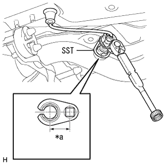

Installation of oxygen sensor (1NZ-FE (4WD)) |
| 1. Oxygen sensor installation |
|  |
Use SST to attach the oxygen sensor.
| *a | Valid (30mm) |
reference)Pull the harness inside the vehicle and connect the oxygen sensor connector.
| 2. Front floor carpet ASSY FR installation |
reference)